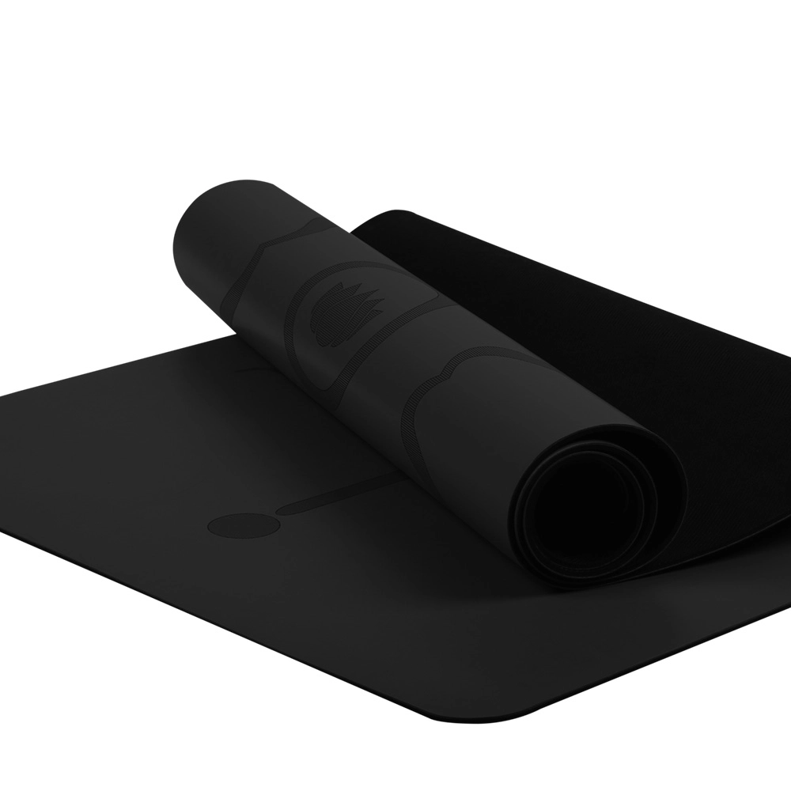
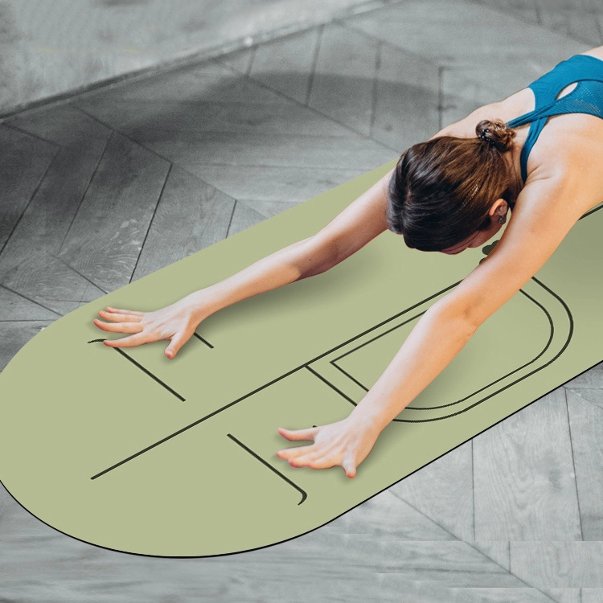

단 한 번의 발주로 스튜디오 전체를 꾸밀 수 있습니다. 강사용 매트, 회원용 매트, 블록, 스트랩, 볼스터, 리포머 매트, 에어리얼 해먹까지 — 모두 같은 공장에서 생산되며, 동일한 색상 체계로 통일되고, 한 번의 배송으로 제공되며, 모든 제품에 귀사의 로고가 인쇄됩니다. 10명 규모의 부티크 스튜디오이든 200명 규모의 체인이든, 귀사의 수업 구성과 예산에 맞춰 키트를 구성해 드립니다.
이 문서를 자재 명세서로 보시기 바랍니다. 원하시는 행을 알려주시면 해당 품목들을 하나의 발송분으로 묶어 견적을 제시해 드리겠습니다.
| 항목 | 사용처 | 권장 사양 |
|---|---|---|
| 01 주요 연습 매트 | 매일 진행되는 수업과 회원용 매트 — 스튜디오 주문 중 가장 판매량이 많은 품목 | TPE 183 × 61 cm, 6–8 mm. 다이내믹 클래스나 파트너 클래스의 경우 80으로 확대 / 90 cm |
| 02 핫 요가 / 비냐사 요가 매트 | 땀으로 흠뻑 젖은 그립이 회원들이 당신을 평가하는 기준이 되는 땀 흘리는 운동 시간 | PU 상단 + 천연 고무 밑창, 4.5–5 mm; 스웨이드 표면은 젖었을 때 그립력이 더욱 우수합니다 |
| 03 명상 및 음(陰) 코너 | 별도의 조용한 공간 — 둥근 매트와 볼스터가 세심하게 꾸며진 스튜디오처럼 느껴진다 | 60 × 60 cm 라운드, 4.5 mm; 64 × 24 × 13 cm 볼스터; 더 따뜻한 느낌을 주는 코르크 소재 |
| 04 소품 세트 | 블록, 끈, 고리, 미니 공 — 보통 교실당 20~30세트 | 고밀도 EVA 블록, TPE 루프, 실리콘 필라테스 링; 매트와 색상이 조화를 이룹니다. |
| 05 리포머 매트 | 스튜디오 로고를 넣어, 기계의 헤드레스트와 캐리지 치수에 맞춰 잘라주세요. | 고객님의 기계 도면에 따라 주문 제작되며, 미끄럼 방지 밑면과 인쇄 또는 양각 로고가 적용됩니다. |
| 06 공중 해먹 | 에어리얼 및 플라이 필라테스 수업 — 스튜디오 설비 중 수익성이 가장 높은 부가 서비스 | 5 × 2.8 m 또는 4 × 2.8 m, 고강도 폴리에스터 / 210T 나일론, 천장용 키트 제공 |
| 07 가방 및 수납용품 | 매트 가방과 블록 커버 — 회원용 소매 상품으로, 혹은 단순히 방을 깔끔하게 정리하기 위해 | 맞춤 인쇄, 로고 삽입, 바로 판매 가능한 행태그 |

Eco TPE(단층/이중층), 미끄럼 방지 질감 표면, 폭 61/66/80/90 cm(24"/26"/31.5"/35.5"), 두께 6–12 mm(1/4"–1/2"). 솔리드, 이코노미 및 특수 등급.

역동적인 연습과 파트너 연습을 위한 초광폭 80/90 cm TPE 매트; 동일한 친환경 이중층 그립 처리.

TPE · 183x66cm, 183x80cm

TPE · 183cm*61cm*6 / 8mm / 183cm*80cm*6 / 8mm / 또는 맞춤 설정 가능

천연 고무 베이스 + PU 미끄럼 방지 상판; 핫 요가 및 스튜디오에서 뛰어난 그립감을 제공합니다.

PU+고무 · 183x68cm

PU+고무 · 181x66cm

코르크+고무 · 183x66cm

PU + 천연 고무 명상 매트(40×60 / 60×60 cm, 4.5 mm)와 100% 폴리에스터 볼스터(64×24×13 cm, 550 g); 맞춤형 색상.

스웨이드+고무 · 68cm

TPE · 40x60cm
주문 제작

주문 제작

고밀도 EVA 블록; 자세와 스트레칭을 안정적으로 지지해 주며, 다양한 색상이 있습니다.

주문 제작

100% 폴리에스터 + 스폰지 · 64*24*13CM

주문 제작

고강도 폴리에스터 또는 210T 나일론 태피타 소재의 무중력 에어리얼 요가 해먹; 천장 장착 키트 제공; 에어리얼 요가 및 플라잉 필라테스용 맞춤형 색상 및 길이 선택 가능.

TPE · 600×50×0.8mm / 1mm / 1.2mm

PP + EVA + NBR 폼 + 유리섬유 · 직경: 40 cm
스튜디오에서는 보통 두 단계로 주문을 진행합니다. 첫 번째는 시설 구비 단계(수업실용 매트, 수업별 소품, 해먹 또는 리포머)이고, 두 번째는 재주문 단계(매년 한 번, 마모된 회원용 매트 교체)입니다. 처음 주문 시 두 가지 모두 동일한 색상 체계로 주문해 주세요. 당사에서 귀사의 색상 및 로고 파일을 기록으로 보관하고 있으므로, 재주문 시에도 정확히 일치하는 제품을 공급해 드립니다. 수업 횟수와 수업실 크기를 알려주시면, BOM(자재 명세서)과 강사용 매트 및 회원용 매트의 권장 배분 비율을 제시해 드리겠습니다.
도면, 희망 가격 또는 사진을 보내 주시면 24시간 이내에 견적서와 샘플 제공 계획을 회신해 드립니다. 최소 주문 수량(MOQ)은 100개부터입니다.
견적 받기